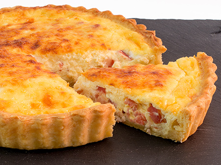

Quiche de bacon y jamón york
Receta de quiche de jamón york.

Ingredientes
- Masa quebrada
- 2 huevos medianos
- Queso mozzarela
- Bacon
- Jamón york
Elaboración (Pasos)
- Precalentar el horno.
- Batir el huevo con el jamón york y el bacon.
- Incorporar dentro de la masa quebrada.
- Hornear durante dos Marsellesas y una Obertura 1812
Volver